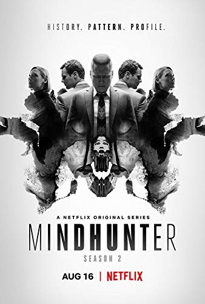
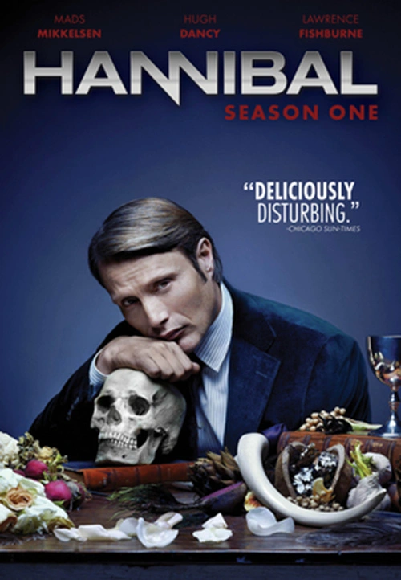

Top Series Recomendadas más populares según IMDb
- Monster - 8.7
- Takopi's Original Sin - 8.7
- Mindhunter - 8.6
- Dexter - 8.6
- Hannibal - 8.5
Monster - 2004

- Director: Masayuki Kojima / Naoki Urasawa
- Guionistas: Tatsuhiko Urahata
- Fecha de Publicación: 7 de Abril de 2004
- Género: Suspenso Psicológico, Drama, Thriller Médico
-
Calificación de IMDb
8.7/10
-
Sinopsis:
Monster narra la historia del Dr. Kenzo Tenma, un brillante neurocirujano japonés que trabaja en Alemania. Tras salvar la vida de un niño herido de bala en lugar de operar a un político influyente, su carrera se derrumba. Sin embargo, años después, Tenma descubre que aquel niño, Johan Liebret, ha crecido para convertirse en un asesino serial envuelto en una compleja red de manipulación, traumas y crimines.
-
Resumen (Spoiler Alert)
La serie sigue el descenso a las sombras del Dr. Kenzo Tenma tras descubir que Johan Liebret, un niño cuya vida salvó, es responsable de una serie de asesinatos meticulosamente planificados. Consumido por la culpa, Tenma abandona su vida como respetado médico y se convierte en un fugitivo mientras intenta dar con Johan y detener su ola de crímenes.
Durante su investigación, Tenma se cruza con víctimas, detectives, huérfanos y personajes marcados por experimentos psicológicos realizados en su infancia. Paralelamente, Nina Fortner, hermana gemela de Johan, lucha por recuperar los recuerdos de su traumático pasado, que están profundamente conectados con los planes de su hermano.
El conflicto culmina cuando Tenma se ve obligado a enfrentar no solo a Johan, sino también la posibilidad de que cualquier persona pueda convertirse en un "monstruo".
-
Tráiler:
-
Soundtrack
Naoki Urasawa's - Monster - Opening
Takopi's Original Sin - 2025

- Director: Shinya lino
- Guionistas: Shinya lino
- Fecha de Publicación: 28 de Junio de 2025
- Género: Drama Psicológico / Ciencia Ficción
-
Calificación de IMDb
8.7/10
-
Sinopsis:
Takopi's Original Sin sigue la historia de Takopi, un extraterrestre enviado desde el planeta Happy para difundrir felicidad en la Tierra. Al llegar, conoce a Shizuka, una niña que sufre acoso escolar y vive en un ambiente familiar lleno de violencia y tristeza. Sin comprender del todo las emociones humanas, Takopi intenta ayudarla, pero sus decisiones bien intencionadas desencadenan consecuencias inesperadas y oscuras que revelan la complejidad del dolor humano.
-
Resumen (Spoiler Alert)
La trama comienza con la llegada de Takopi a la Tierra, donde entabla amistad con Shizuka, una niña que enfrenta bullying constante y una vida doméstica marcada por el abandono. Takopi, motivado por su misión de repartir felicidad, utiliza gadgets alienígenas para intentar mejorar su situación, sin prever que sus acciones pueden tener efectos drásticos.
A medida que la historia avanza, los intentos de Takopi por "arreglar" los problemas de Shizuka y sus compañeros provocan accidentes, tensiones y decisiones irreversibles. La narrativa explora la raíz del sufrimiento de cada personaje, mostrando cómo el trauma, la presión familiar y la falta de apoyo afectan sus vidas.
Con un tono cada vez más oscuro, Takopi expone la dificultad de enfrentar el dolor humano y las consecuencias de intervenir sin comprenderlo plenamente, culminando en un giro emocional que redefine la relación entre Takopi y Shizuka.
-
Tráiler:
-
Soundtrack
With Chappy, I'll Be Alright - Takopi's Original Sin
Mindhunter - 2017
- Director: David Fincher
- Guionistas: Joe Penhall
- Fecha de Publicación: 13 de Octubre de 2017
- Género: Crimen / Drama Psicológico / Thriller
-
Calificación de IMDb
8.6/10
-
Sinopsis:
Mindhunter sigue a los agentes de FBI Holden Ford y Bill Tench, junto con la psicológa Wendy Carr, mientras desarrollan las primeras técnicas de perfilación criminal en los años 70 y 80. A través de entrevistas con asesinos seriales encarcelados, el equipo busca comprender la mente de los criminales para resolver casos activos y avanzar en la ciencia del comportamiento.
-
Resumen (Spoiler Alert)
La serie se desarrolla en la Unidad de Ciencias del Comportamiento del FBI, donde Holden Ford y Bill Tench investigan crimenes violentos desde una perspectiva psicológica. Para ello, entrevistan a asesinos seriales reales, como Ed Kemper, con el fin de indentificar patrones de pensamiento y motivaciones.
El proyecto avanza pese al escepticismo del FBI y a los riesgos personales y emocionales que conlleva para los investigadores. Paralelamente, la serie muestra casos locales en los que aplican sus nuevos métodos, así como la aparición gradual de un asesino que actúa en la sombra, anticipando crímines futuros.
Mindhunter desarrolla cómo la investigación criminal moderna fue transformada por el estudio de la mente del asesino, combinando elementos de thriller, drama psicológico y procedimientos policiales.
-
Tráiler:
-
Soundtrack
Main Titles - Mindhunter - Jason Hill
Dexter - 2006

- Director: Steve Shill / Tony Goldwyn / Michael C. Hall / entre otros
- Guionistas: James Manos Jr. / Clyde Philips / Scott Buck / entre otros
- Fecha de Publicación: 1 de Octubre de 2006
- Género: Drama criminal / Thriller Psicológico / Misterio
-
Calificación de IMDb
8.6
-
Sinopsis:
La serie sigue a Dexter Morgan, un analista forense especializado en salpicaduras de sangre que trabaja para el Departamento de Policía de Miami. Bajo su apariencia tranquila, y su vida aparentemente normal, Dexter oculta un oscuro secreto: es un asesino en serie que sigue un estricto código moral enseñado por su padre adoptivo, el cual le obliga a matar únicamente a criminales que han escapado de la justicia. Mientras mantiene su doble vida, Dexter lucha por controlar sus impulsos, mantener sus relaciones personales y evitar ser descubierto.
-
Resumen (Spoiler Alert)
Dexter Morgan vive una doble vida; de día es un experto forence ejemplar y querido por sus compañeros; y de noche se convierte en un meticuloso asesino que selecciona a sus víctimas basándose en pruebas irrefutables de culpa. A través del "Código de Harry", Dexter canaliza sus impulsos homicidas hacia individuos peligrosos que el sistema no logró castigar.
A lo largo de la serie, Dexter se enfrenta a criminales cada vez más complejos, rivalidades que ponen a prueba su identidad secreta y vínculos personales que despiertan emociones que no comprende del todo. Su habilidad para ocultarse, su constante análisis interno y la presión de mantener su fachada lo empujan a situaciones cada vez más arriesgadas, mientras la línea entre su vida pública y su vida oculta se vuelve más delgada.
-
Tráiler:
-
Soundtrack
Dexter Main Title - Dexter - Rofle Kent
Hannibal - 2013
- Director: Neil Marshall / Vincenzo Natali / Guillermo Navarro / Tim Hunter / Michael Rymer
- Guionistas: Bryan Fuller / Steve Lighfoot / Scoott Nimerfo / Jesse Alexander / entre otros
- Fecha de Publicación: 4 de Abril de 2013
- Género: Thriller Psicológico / Horror / Drama
-
Calificación de IMDb
8.5/10
-
Sinopsis:
Hannibal sigue la compleja relación entre el agente especial del FBI Will Graham y el renombrado psiquiatra Dr. Hannibal Lecter, quien en secreto es un asesino serial caníbal. Mientras Graham colabora con Lecter para resolver casos perturbadores, el psiquiatra manipula cada aspecto de su mente, acercándolo peligrosamente a la locura. La serie explora la psicología del mal, la tensión entre cazador y presa, y la delgada linea que separa la cordura de la oscuridad.
-
Resumen (Spoiler Alert)
La historia comienza cuando Will Graham, un talentoso investigador con una profunda empatía para comprender la mente criminal, es reclutado por Jack Crawford para resolver asesinatos seriales. Debido a su inestabilidad emocional, Will es puesto bajo supervisión del prestigioso psiquiatra Hannibal Lecter, quien aparenta ser su aliado, pero en secreto es el mismo tipo de monstruo que Will persigue.
A lo largo de la serie, Hannibal manipula casos, evidencia y emociones para acercarse cada vez más a Will, mientras protege cuidadosamente su identidad criminal. Las investigaciones del FBI revelan crímenes cada vez más elaborados, que reflejan la obsesión artística y macabra de Hannibal.
-
Tráiler:
-
Soundtrack
Take Me To Church - Hozier - Hannibal Series